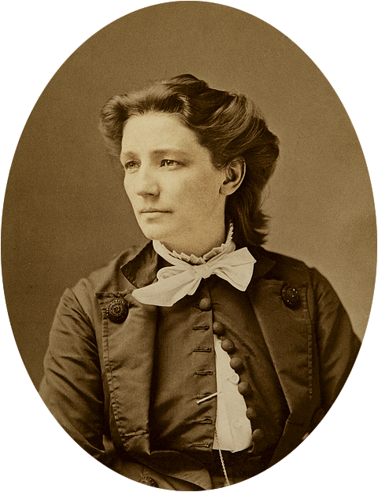

About Victoria Woodhull
In 1872, Victoria Woodhull ran for President of the United States. She was an activist for women's rights and labor reform. She was also an advocate of being able to freely love who you choose. With the nobility of free love, which means the freedom to marry, divorce, and bear children without government interference. Her role as a representative of these movements was powerful. She wrote many articles and spoke about her beliefs. She was a candidate in the Equal Rights Party, supporting women's suffrage and equal rights.  Together with her sister, Tennessee Claflin, she was the first woman to operate a brokerage firm on Wall Street, they were among the first women to found a newspaper in the United States, Woodhull & Claflin's Weekly, which began publication in 1870. She was arrested on obscenity charges a few days before the election, for publishing an account of the alleged adulterous affair between the prominent minister Henry Ward Beecher and Elizabeth Tilton, added to the sensational coverage of her candidacy.
Victoria was one of 10 children with a illiterate mother and a criminal father. Victoria never started elementary school until she was 8 years old. She then attended off and on for only three years before dropping out. Any hope of further education was dashed at age 15, when she married a doctor who soon revealed himself as an alcoholic philanderer. To make matters even more difficult, Woodhull gave birth to a mentally handicapped son in 1854. Later on in life she married two other people and divorced them as well. She had a total of 2 children. Victoria had a hard a rough life she did not win the election but that didn't stop her to speak her word and do what was right.